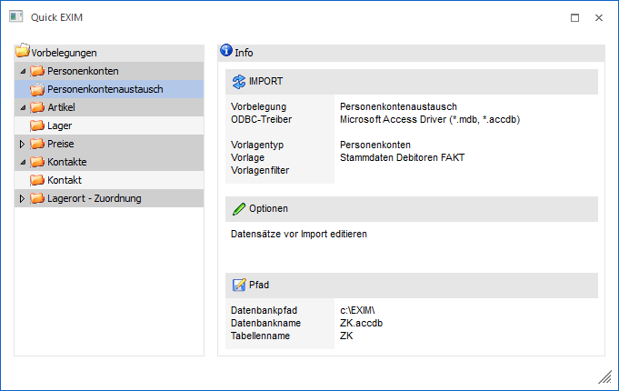

Über das Programm "Quick EXIM", welches über…
1 WinLine START
1 Vorlagen
1 Quick-EXIM
… aufgerufen werden kann, ist es möglich aufgrund zuvor angelegter / gespeicherten "EXIM-Vorbelegungen" einen schnellen Ex- bzw. Import von Stammdaten durchzuführen. Es werden lediglich die Vorbelegungen im Tree angezeigt, wo der User sowohl eine Berechtigung für die Vorlage als auch ggf. auf einen dort hinterlegten Filter besitzt.
Hinweis
Die Vorbelegungen werden im Programm "EXIM" definiert (nähere Informationen entnehmen Sie bitte dem Kapitel "EXIM").

Ø Vorbelegungen
In linken Bereich des Bildschirms werden alle Vorbelegungen, in Form einer Baumstruktur (nach Stammdatenebereichen getrennt) aufgelistet. Wird eine der "Vorbelegungen" mit der Maus aktiviert (angeklickt), dann werden im rechten Bereich des Fensters die gespeicherten Parameter (u.a. Art des Datentransfers, d.h. Export oder Import, den eingestellten ODBC-Treiber, den Datenpfad, etc.) angezeigt.
Hinweis
Eine Vorbelegung wird nur angezeigt, wenn der User sowohl die Berechtigung für die Vorlage als auch ggf. für einen dort hinterlegten Filter besitzt.
Buttons
Ø Ok
Durch Anwahl des Buttons "Ok" bzw. der Taste F5 wird der Ex- bzw. Import gestartet.
Hinweis
Nähere Information zu den Prüfroutinen des EXIMs entnehmen Sie bitte dem Kapitel "EXIM".
Ø Import
Wurde eines Import-Vorbelegung mit der Option "Datensätze vor Import editieren" ausgewählt, so wird man durch Anwahl des Buttons "Ok" zunächst in eine Importvorschau geführt. An dieser Stelle kann der Import per Button "Import" gestartet werden,
Ø Ende
Durch Anwahl des Buttons "Ende" bzw. der Taste ESC wird das Fenster geschlossen und kein Ex- bzw. Import durchgeführt.
Ø Vorschau
Der Buttons "Vorschau" steht nur bei der Auswahl einer Export-Vorbelegung zur Verfügung und bewirkt, dass alle zu exportierenden Daten in Form einer Tabelle dargestellt werden.
Ø Zurück
Befindet man sich in der Export- oder Importvorschau, dann kann durch Anwahl des Buttons "Zurück" wieder in die Vorbelegungsauswahl gewechselt werden.